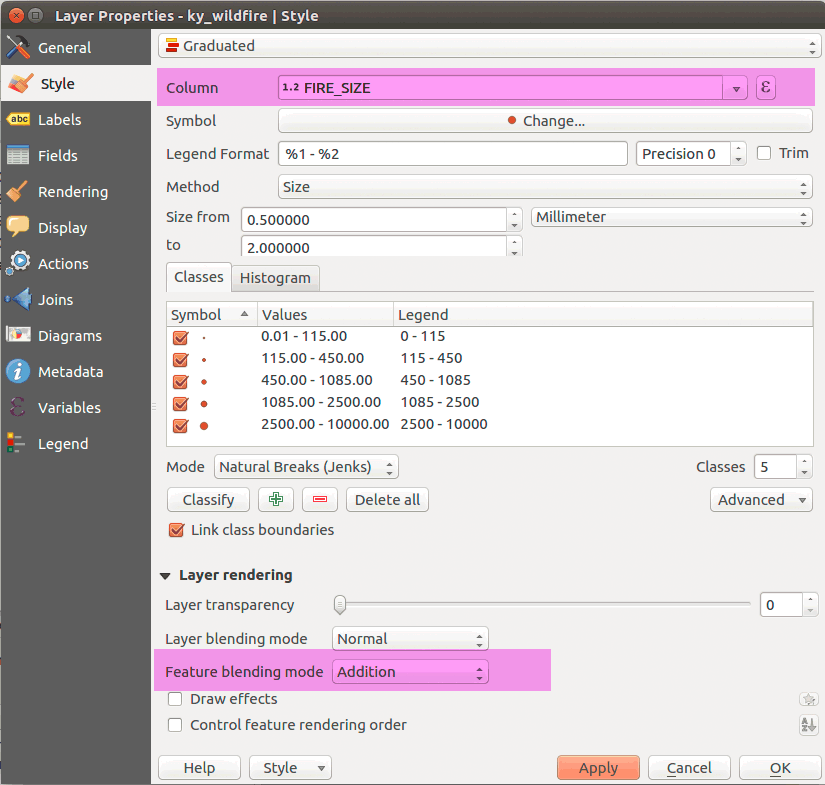
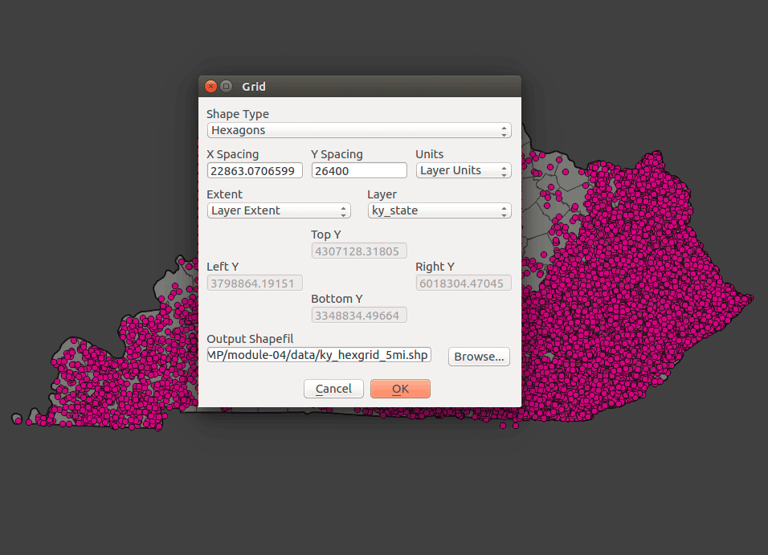
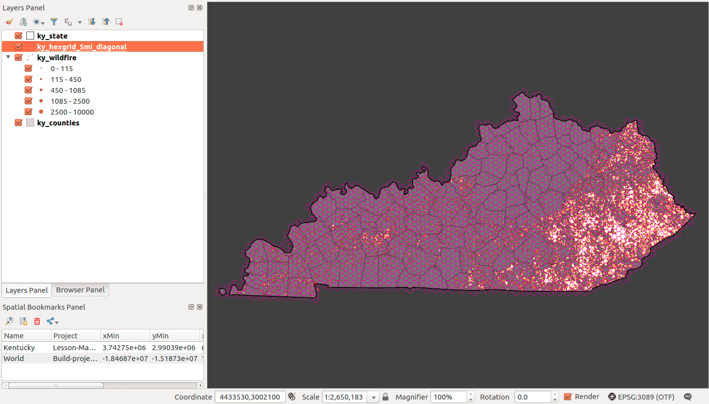
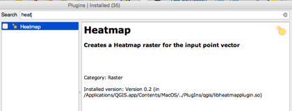

Figure 02: Saving a GeoJSON layer for analysis
This module takes point-level data and explores two techniques for their thematic representation using QGIS: the hexbin and the heatmap.
In this module, we will:
This week we have a 'whopper' of a dataset:
US Wildfires 1992-2013 SpatiaLite database on Dropbox
What are hexbins, aka hexagonal grids, and why are they cool for mappers? Hexbinning is a technique used to aggregate a large number of points into hexagonal grids. The method is similar to a choropleth, though rather than taking political boundaries as the aggregation unit, we create a grid of equal-sized, adjacent with no gaps, and non-overlapping polygons.
We'll create hexagonal grids using the MMQGIS plugin and/or the tessellation functions in our spatial database. Our grid can be comprised of squares, equilateral triangles, or hexagons. The SpatiaLite and PostGIS functions are remarkably easy to configure and run.
The primary dataset we'll use is point locations for U.S. wildfires from 1992-2013. With over 1.7 million records, we will need a good way to visualize and analyze these points. We'll use the spatial join to aggregate by hexagonal grids, which gives use an immediate density measure, spatial join by county with demographic information, and finally create a heat map, which creates a kernel density raster map.
Unlike our previous lessons, we will need to transform our layer's coordinate systems.
For displaying maps, we use the 'on the fly' projection method to make our layers overlap regardless of the layer's source CRS. We've found that when we perform spatial joins, the layers must share the same coordinate system. Now, when we use geospatial algorithms that have distance as an input parameter, e.g., buffer points by some distance or create new polygon features of a fixed size, we need to use a projected coordinate system with a linear unit of measure.
Most of the geospatial data we find online, especially small-scale vector data, is in either WGS84 or NAD83, which are geographic coordinate systems. These geographic coordinate systems are the standard for a web mapping workflow, and we'll always need to manage them properly. For example, we know that we need to export GeoJSONs in a WGS84 CRS to use online. Try geojson.io to verify your web mapping layers.
However, a hexagon grid generated in WGS84 or NAD83 will not maintain equal areas for hexagons across a large area, which defeats the purpose of hexbinning. So, we need to find a local projected coordinate to use in our analysis.
We have (generally) two families of local, projected CRSs we can use, Universal Transverse Mercator (UTM) and State Plane Coordinate System (SPCS).
UTM zones are global, based on the WGS84 GCS, and always have a meter as the linear unit of measure. The State Plane Coordinate System was developed to maintain the highest level of measurement capability on maps of U.S. states. They are tuned to each state, and most states have multiple zones tuned to even smaller regions in that state. They are based on the NAD83 GCS with multiple datum realizations (correcting for the shifting of North America due to plate tectonics) and offer both meter and feet linear units of measure.
Both families maximize the accuracy of measuring shape, distance, and area for the areas they cover. If we create a hexagon grid in one of these coordinate systems, then we're confident that our hexagons will maintain identical areas in any projection.
Which to use? UTM zones are pretty easy to use, but if you want foot as a linear unit of measure, you'll need an SPCS zone. Find both UTM and SPCS zones for any county in the U.S. with this handy old-school Flash map. Note, check your state's SPCS for a single-zone option.
In our workflow, we'll render features for our area of interest (from datasets in NAD83 or WGS84) to a new spatial database layer (or GeoJSON layer) in the desired projected coordinate system.
Extract and connect the "Wildfires_1992-2013_NAD83.sqlite" database. The database contains over 1.7 million points representing wildfires. While that is a large dataset by itself, the database contains a spatial index for the layers. That adds considerably to the file size of the database but has important advantages we'll address later in the lesson.
You may select any state to analyze for this lesson. I will select Kentucky and use the Kentucky State Plane single zone US foot (EPSG:3089), the official CRS for the state.
Add the FPA_FOD_20150323 Fires to your Layers Panel. You probably noticed that it took awhile to draw. Let's subset our desired region by right-clicking the layer and selecting Filter...:
Figure 01: Filtering a layer for Kentucky wildfire points
The query is:
"State" = 'KY'
Next, we need to save the layer to a new GeoJSON in the correct CRS, with a limited set of fields, and with full coordinate precision. Since we're interested in the size of the fire, we will only keep the field name FIRE_SIZE, which is the the area burned in acres. Right-click the layer and select Save As...:
Figure 02: Saving a GeoJSON layer for analysis
Repeat the same steps for the county and state layers. We want to have three layers in our Layers Panel:

Figure 03: Three layers in Map Canvas
Let's execute some SQL queries to isolate our state and transform the layers' CRS when we add them to our new database I'm calling, "kentucky-wildfires-EPSG3089.sqlite." If you're in PostGIS, then you can create a new schema called "kentucky-wildfires-EPSG3089".
Before we start executing SQL, let's find example statements we can use during the lesson. If you haven't changed table names, you should be able to copy these statements and paste them into DB Manager.
Let's inspect our fire data. To limit the records returned from this huge set, use the following SQL:
/* View the first 10 records in the database */
select
*
from
"FPA_FOD_20150323 Fires"
limit
10
This query will give us enough attributes to craft a query that extracts just Kentucky:
/* Select Kentucky records in the database */
select
*
from
"FPA_FOD_20150323 Fires"
where
STATE = 'KY'
Now create queries to use on the county and state layers to extract Kentucky.
We have a couple of ways to get these selections to a new database as we've discovered. We could create new tables or insert these queries like we did in the last lesson. Let's Load as new layer and add to the Map Canvas.
Change the 'on the fly' projection to EPSG: 3089 and view your layers in Map Canvas:
Figure 04: Three layers in Map Canvas
You might notice that there is a delay in the draw time for the wildfire points. Since it is a query, it is dynamically produced each time you make a change in Map Canvas. Let's render the query to our new database and change it's CRS, too. Use the Import layer dialog in DB Manager:
Figure 05: Import layer into new database
Notice the change in the Target SRID: 3089 and make sure you enable the Create spatial index option. Now, finish the imports (using the target CRS and creating a spatial index) and verify your database has Kentucky wildfire points, counties, and state outline.
Let's add some initial styles to our layers. Since we're dealing with fire, let's make our points glow against a darker background. Select the wildfire points Style tab to Graduated by size using the fire_size attribute. Also, change the feature blending mode to Addition. The settings could be similar to:

Figure 06: Styling point data for glow effect
Finally, style the other layers and set the Project Properties background color to a dark gray and make sure the on-the-fly CRS is set to "EPSG: 3089":
Figure 07: Simple map set up
This is a decent visualization of wildfires in Kentucky. We're using the unique feature blending modes to imply wildfire rates; glowing areas imply more wildfire. However, we might need to quantify the rates, i.e., "what is maximum amount of wildfire area burned?" To accomplish this, we need to normalize the amount of wildfire area burned by an enumeration unit. The hexbin provides a useful unit, because we can easily show density with a spatial join.
We'll use a plugin and tool we introduced in the previous lessons. The general workflow is 1) create a hexbin and 2) do a spatial join aggregating wildfire points by hexagon.
Using MMQGIS plugin Create Grid Layer function might be the easiest way to create a hexagonal grid layer. You should remember the plugin from the last lesson. It outputs to a Shapefile. Find the plugin here:
Figure 08: Using MMQGIS plugin Create Grid Layer function
You should select the layer you want cover with a hexagonal grid. Since we're analyzing Kentucky wildfires, let's select that layer. The other parameters should be obvious except for the X and Y dimension. The correspond to the short diameter of a hexagon (X spacing) and the long diameter (Y spacing). If we wanted a 5-mile long-diameter hexagon, the Y spacing parameter would be 5*5280 = 26400:

Figure 09: Creating a hex grid with a 5-mile long diameter for each hexagon
Your output should look similar to:

Figure 09: A 5-mile long diameter hexgrid covering Kentucky
Launch the QGIS menu tool > Vector > Data Management Tools > Join attributes by location and create a temporary layer that:
The tool parameters should look like:
Figure 10: Spatial join wildfires to 5-mile long diameter hexgrid
After a successful output, take a look at the attribute table. You should have a field called sumFIRE_SIZE which is total acreage per hexagon. You can sort by this field (double-clicking the field name) and select the record. That will highlight the hexagon with the most fire.
Access the properties for your joined layer and created a graduated color scheme using the sumFIRE_SIZE field. Add a little transparency to the layer and remove the hexagon outlines. Your style panel should look like:

Figure 11: Styling the hexagon layer

Figure 12: Your final map visualization
The next section will explore the same process in SQL.
We'll create hexagonal grids using the tessellation functions in SpatiaLite. If you're working in PostGIS, look at the lesson PostGIS SQL file where we Load custom function to create hexagon grids into PostGIS (starting around line 60). Each function requires only two parameters:
You can make a hexagon exactly 5-miles wide on the long diagonal (outer diameter) with the equation side = diagonal/2. Hexagons in an equal-area projected CRS also have the same area when they're projected to other CRSs. That's the purpose of hexbinning; making polygons of the same size to measure density.
Let's use SQL to create a 5-mile diagonal hexagon grid. Use the following statement to cover your state of choice:
/* Make hexagonal grid */
select
/* function requires geometry field and length of side. Notice the conversion to 2.5 miles */
st_hexagonalgrid(geom, 2.5*5280) as geom
from
ky_state
Now, Load as new layer to view in Map Canvas. You might notice that it takes awhile to draw. Again, we're dealing with a query layer, so we'll need to render it. If we were creating a lot of grids, we should create a new table and use the insert into statement to populate new layers.

Figure 13: Five-mile diagonal hexagons
What if your polygons layer cover too much area and we are only concerned with making a grid that covers the extent of our point layer? Since we already have a point layer that we wish to hexbin, let's just create a grid that only covers those points.
The st_hexagonalgrid() function requires a polygon layer, so using a point layer will not work. We need to create a convex hull on our point layer. A convex hull is the smallest convex polygon that covers a group of features. We'll use two functions in our spatial database, the st_convexhull() and st_collect(), to make a convex hull. Let's construct an SQL query to make this polygon:
/* Construct convex hull on wildfire points */
select
st_convexhull(st_collect(geom)) as geom
from
ky_wildfires
The st_collect() creates a multipoint feature and the st_convexhull() wraps a polygon around this group of points. The output should look similar to:
Figure 07: Convex hull from wildfire points
Of course, we could combine these queries into one statement:
/* Make hexagonal grid from convex hull on wildfire points */
select
/* function requires geometry field and length of side. Notice the conversion to 2.5 miles */
st_hexagonalgrid(st_convexhull(st_collect(geom)), 2.5*5280) as geom
-- NOTE: Do NOT include 'id' in table.
from
ky_wildfires
The output of this query would look like:
Figure 14: Hexbin from convex hull
We have an issue that needs to be addressed. The st_hexagonalgrid() function outputs a "multipolygon" such that all of these hexagons are encoded as a single, multipart polygon. We cannot use this polygon for hexbinning. Let's introduce some Geometry Tools in QGIS into our workflow. The first tool we'll use is the Multipart to singleparts tool, which is found in the QGIS menu Vector > Geometry Tools. Set the hex grid as your input and leave the "[Create temporary layer]" option for output. This tool will create a unique record for each hexagon that we can use for spatial joining:
Figure 15: Multipart to singleparts tool
Next, let's add a unique number for each row using the Field Calculator in QGIS. Access it by right-clicking your newly created layer and select Open attribute table. Select the Open field calculator button:
Figure 16: Add unique id to each record
If you've imported the layer in DB Manager and see only NULL values for your id field, then execute the following query in SpatiaLite:
update
hexgrid_5mi
set
id = rowid
Or in PostGIS:
/* Remove a corrupted id field */
alter table
hexgrid_5mi
drop if exists
id
/* Create new id field as a Primary key (autincrementing and always unique) */
alter table
hexgrid_5mi
add column
id SERIAL PRIMARY KEY
We need a unique identifier for each hexagon to work properly during a spatial join.
This section is for SpatiaLite users. PostGIS accomplishes spatial indexing 'behind the scenes'. We only need to specify Create spatial index in Db Manager when we import layers into a PostGIS database. If you are in PostGIS, use the lesson PostGIS SQL file.
This section should be familiar from our last lesson with one major exception; we will use SpatiaLite's spatial index that we've been creating for each layer. The spatial index leverages SQLite's R*Tree index to search and find features between layers. The spatial index is a hidden table that relates all geometry features in a database to each other and is essentially two columns:
With this simplification, we can more quickly find our intersecting features, but there is an important caveat. As explained in SQLite's description of the RTree index, "An RTree index does not normally provide the exact answer but merely reduces the set of potential answers from millions to dozens." Why? Because a minimum bounding box around a hexagon is larger than the hexagon, but it significantly limits our search to a smaller area.
First, let's look at we already know for a spatial join:
/* Test spatial join wildfire points to 5-mile hexagonal grid */
select
hexgrid_5mi.id,
count(ky_wildfire.id) as count,
hexgrid_5mi.geom
from
hexgrid_5mi
join
ky_wildfire
on
st_intersects(hexgrid_5mi.geom, ky_wildfire.geom)
group by
hexgrid_5mi.id
/**********************************************/
limit 40 -- limit to 40 hexagons
/***********************************************/
The output from query and note the count of wildfires by hexagon ID:
Figure 17: Counting wildfires by hexagon ID, accurately but slowly
How long did it take? SpatiaLite is checking every single record and finding exact intersections. It's like reading a whole book just to find chapter 2; a long process but will work accurately. What if each hexagon and point already knew which features were in their neighborhood? The minimum bounding rectangle around each feature creates this 'local knowledge' in the spatial index. We just need to query it.
Let's look at how we implement spatial index in the SQL:
/* Using spatial index find points over hexagons and add the hexagon id to the output */
/* The output is similar to a "one-to-many" spatial join */
select
hexgrid_5mi.id as hex_id,
ky_wildfire.id as pt_id,
ky_wildfire.geom
from
hexgrid_5mi, ky_wildfire
where
/* Start the spatial index query */
ky_wildfire.rowid
in (
select rowid from SpatialIndex
where
f_table_name = 'ky_wildfire'
and
search_frame = hexgrid_5mi.geom
)
/**********************************************/
limit 100 -- limit to 100 records
/***********************************************/
The spatial index query uses system tables that are not shown in DB Manager. The undeclared column rowid is the system name for the primary key, which is usually stored in the 'id' field. The SpatialIndex table contains the minimum bounding boxes for all feature geometries in the database. The in operator will find all matches in SpatialIndex table query where the ky_wildfire point share the same 'neighborhood' with a hexgrid_5mi hexagon. It's not saying that the hexagon exactly contains each point, but rather their minimum bounding rectangles overlap.
This is the output from the above query. Try limiting based to 1000 records. Still fast but not exactly what we're looking for:
Figure 15: Each point 'knows' in which hexagon neighborhood it belongs
Let's start our "many-to-one" spatial join by adding the join and group by statements, while using our spatial index query:
/* Test spatial join wildfire points using spatial index */
select
hexgrid_5mi.id,
count(ky_wildfire.id) as count,
hexgrid_5mi.geom
from
hexgrid_5mi
join
ky_wildfire
on
/* Start the spatial index query */
ky_wildfire.rowid
in (
select rowid from SpatialIndex
where
f_table_name = 'ky_wildfire'
and
search_frame = hexgrid_5mi.geom
)
group by
hexgrid_5mi.id
/**********************************************/
limit 40 -- limit to 40 hexagons
/***********************************************/
Let's take a look at the output and compare it Figure: 12. Notice how the count here is higher because we're matching to the hexagon's minimum bounding rectangle.
Figure 16: Counting fire points by a hexagon's minimum bounding rectangle, fast but includes points just outside the hexagon
We seem to have difficult choice with our two different queries; slow and accurate vs. fast and sloppy. We have an easy solution, though. Let's combine them with an and operator. The spatial index query will narrow the search significantly, and st_intersects() function will test for spatial proximity accurately on a much smaller set of points.
Can we do any summary statistics on our fire data when we aggregate by hexagon? When you inspect the metadata for the wildfire layer you find that we have at least attribute we can use with a sum() function, FIRE_SIZE gives us acres of final fire size.
Let's make a join statement that returns only the hexagons with fires and its id, the area of each hexagon, the count of fires, and the size of fire in square miles. Let's also rank it by cumulative fire size:
/* Perform accurate spatial join using the intersects function and a spatial index query */
select
hexgrid_5mi.id,
count(ky_wildfire.id) as count,
round((sum(ky_wildfire.FIRE_SIZE)/640),4) as fires_area_sq_mi,
hexgrid_5mi.geom
from
hexgrid_5mi
join
ky_wildfire
on
/* Perform the accurate intersect test */
st_intersects(hexgrid_5mi.geom, ky_wildfire.geom)
and
/* Use the spatial index query to limit our candidate points */
ky_wildfire.rowid
in (
select rowid from SpatialIndex
where
f_table_name = 'ky_wildfire'
and
search_frame = hexgrid_5mi.geom
)
group by
hexgrid_5mi.id
/**********************************************/
-- limit 40 -- go full strength!
/***********************************************/
order by
fires_area_sq_mi desc
For output, I got 1975 hexagons with the following attributes:
Figure 18: Query output
As we've done with our first hexagonal grid, we could Load as a new layer and start symbology. It will be more efficient to create a new table and insert our query output to its new table.
First, let's create a new table to receive our query's output:
Figure 19: Create new table for spatial join
And use the following query to population your new table with features:
/* Spatial join wildfire points to 5-mile hexagonal grid */
insert into wildfire_by_5mile_hexagon
(hex_area_sq_mi,count,fire_area_sq_mi,geom)
select
hexgrid_5mi.area_sq_mi,
count(ky_wildfire.id) as count,
round((sum(ky_wildfire.FIRE_SIZE)/640),4) as fires_area_sq_mi,
hexgrid_5mi.geom
from
hexgrid_5mi
join
ky_wildfire
on
/* Use the spatial index query to limit our candidate points */
st_intersects(hexgrid_5mi.geom, ky_wildfire.geom)
and
/* Use the spatial index query to limit our candidate points */
ky_wildfire.rowid
in (
select rowid from SpatialIndex
where
f_table_name = 'ky_wildfire'
and
search_frame = hexgrid_5mi.geom
)
group by
hexgrid_5mi.id
Let's take a look at the Info and Table tabs and see if we have output:
Figure 20: Successful output from query
After you have successful output, add your layer and apply some appropriate styling to make a similar map:

Figure 21: Five-mile hexbin map showing cumulative square miles of wildfire area
Note that we don't need to normalize unless you want to show the ratio of burned area in each hexagon.
The create table as statements can produce new tables from select statements. This option is not available with SpatiaLite geometry tables mainly because of the spatial index. The best way to create and edit tables with geometry is using the DB Manager Table > Create Table like we have already done. If your table isn't spatial, then you could use the create table as on queries in SpatiaLite.
For example, if we wanted to create summary statistic tables that we could export for using in a layout, we could apply the following query:
/* Make table with summary statistics */
create table summary_stats as
select
avg(fire_area_sq_mi) as "Average square miles burned by hexagon",
sum(fire_area_sq_mi) as "Total cumulative sq mi burned",
max(fire_area_sq_mi) as "Largest etc."
from
wildfire_by_5mile_hexagon
As you experiment with queries and need to delete tables, you'll discover that you might have 'zombie' tables that persist though you deleted them. A database tool called Vacuum. This tool will remove tables and entries that are no longer needed. You can find the tool in DB Manager Database > Run Vaccum.
Let's now turn to representing the same data with the heatmap, a visualization technique that produces a density raster. This tool is often called a kernel density function and the QGIS's help explains that it will "create a density (heatmap) raster of an input point vector layer. The density is calculated based on the number of points in a location, with larger numbers of clustered points resulting in larger values. Heatmaps allow easy identification of "hotspots" and clustering of points."
Ensure that the heatmap plugin is installed and activated. In QGIS main menu find Plugins > Manage and Install Plugins... > Heatmap.

Figure 22: Heatmap plugin for QGIS
Open the Heatmap Plugin (Raster > Heatmap > Heatmap ...). Within this dialog, select the wildfire point layer as input. The plugin will write a raster file in a GeoTIFF format to disk. Each cell in this raster will be a numeric value representing the number of fires per some area. Adjust the Radius parameter to 10,000 feet, which "specifies the distance around a point at which the influence of the point will be felt. Larger values result in greater smoothing, but smaller values may show finer details and variation in point density," as described in QGIS's help documentation.
Leave Advanced option disabled for now.

Figure 23: Settings for creating a heat map in QGIS
Let's look at an example using the search Radius parameter. If only two fires happened in a search radius and they happened at the same location, you would get an output value of 2 (fires per search radius). If they more distant than the search radius, the output value would be 1. If they were half the distance of the search radius from each other, the output value could 1.5, but it could any value between 1 and 2 depending on the kernel shape) that defines the significance of neighboring points.

Figure 24: Kernel shapes from Wikipedia
The default result is a raster map where the lightest color indicates a high density of the given phenomena and the darker color shows a low density. You could say occurrences of fire in the search radius. If our search radius was sufficiently large, the output value would be very close to the total number of fires in the point layer. The values of the raster are currently being displayed using a continuous singleband grayscale.
Figure 25: Default grayscale output of Heatmap tool
Let's take a look at the raster layer's Properties > Style tab, which is significantly different than vector styles.

Figure 26: Raster style properties
In singleband gray rasters, cell values show a quantity, the number of wildfires in our search radius, which means we have a continuous range between the minimum and the maximum number of fires. By default, the grayscale color ramp is stretched to the min/max values, where black represents the minimum value and white represents maximum value. Click on Load min/max values, select Min/Max, enable Accuracy > Actual (Slower), and click Load. This gives us the total range of values in our dataset to represent. The hit Apply:
Figure 27: Adjust raster settings to show full range of values to symbolize
Compare with the Cumulative count cut option, which compresses the tail ends of the frequency distribution. Adjust the numbers and see how you can best find the "hot spots" on the map:

Figure 28: Cumulative count cut method of defining range of values to symbolize
Using the singleband gray Render type will help us understand how raster cell values get colored on the map. However, it's a very exciting image and we how more options with different render types.
Let's produce a colored version of this raster by adjusting the layer's properties. Under Render type, choose Singleband pseudocolor using a OrRd color scheme.
Figure 29: Rendering settings for singleband pseudocolor
Since we're concerned with high-density areas, let's make the low-density areas have less opacity. Click the Color Edit button and change the transparencies of the low-density color values:

Figure 30: Custom gradient color ramps
We have the option to embed widgets in the legend. The default widget is a transparency slider, which allows us to conveniently change a raster layers transparency.
Find the slider in the raster layer's Properties > Legend tab. Add the widget and hit OK:

Figure 31: Raster layer transparency slider
Map output:

Figure 32: Raster heatmap using pseudocolor settings and transparency slider
We can weight the points that we input to a heatmap function by a numeric attribute. We have fire size for each point that we can use. Let's create a new heatmap with the following options set:

Figure 33: Weighting a heatmap with an attribute
After we style the raster output, you should see a similar map:
Figure 34: A heatmap using fire size to weight the input points
This map shows the amount of land burned by fire (some areas burned multiple times over two decades), while the count of fires per search area shows the frequency of wildfire. It should be obvious that it takes only one wildfire to create massive damage.
As we can see, the heatmap gives us a lot of options to visualize spatial patterns, but it takes experimentation to find an appropriate setup. Keep at it and don't view my examples as the only option.
One last tip for working in raster: use transparency for your raster layers.
As we have explored in this lesson, we have numerous techniques to visualize point data in QGIS. Let's summarize the techniques we've used so far in a few maps.

Figure 35: Dot map (with custom feature blending mode) and hexagonal grid

Figure 36: Two subtly distinct heatmaps